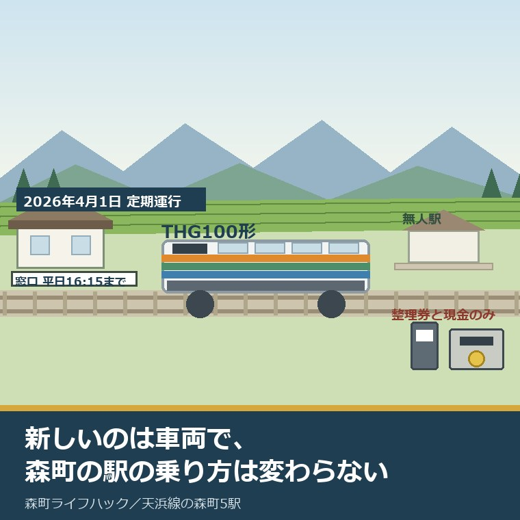
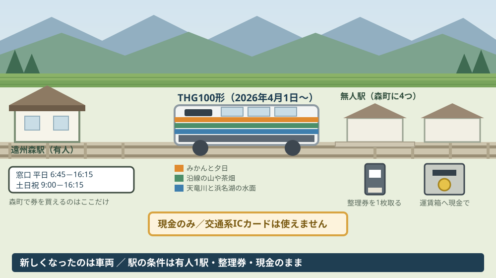
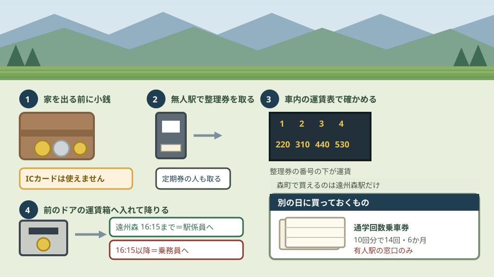

天浜線の新型車両THG100形｜森町5駅の乗り方は変わらない

この記事の要点
Q. 天浜線に新しい車両が入ったそうですが、森町の駅でも乗り方は変わるのですか。
A. 乗り方は変わりません。天竜浜名湖鉄道公式によれば、新型電気式気動車THG100形は2026年4月1日から定期運行を始めました。ただし公式の案内では乗車券の購入も車内精算も現金のみで、交通系ICカードは使えません。無人駅では整理券を取ります。森町の5駅で有人駅は遠州森駅だけです。
静岡県周智郡森町（遠州森町）から、天竜浜名湖鉄道で高校へ通っている。あるいは掛川の病院へ通っている。「新しい車両が入ったらしい」と聞いて、何か変わるのかと思った。この記事は、その疑問から始まる方に向けて書いています。
先に結論を書きます。変わるのは車両で、乗り方は変わりません。森町の駅で財布から出すものも、乗る前にする動作も、2026年3月までと同じです。
ただし、この記事で伝えたいのは「変わらないから読まなくていい」ということではありません。変わらない部分にこそ、森町から天浜線を使う家族が毎月払っている手間と金額があります。
今日は2026年8月28日です。まず新型車両について公表されていることを並べ、そのあとで森町の5駅の条件に落とします。
公式情報から確定できること
2026年8月28日時点で、天竜浜名湖鉄道公式と森町公式から確認できたことを並べます。出典は記事の末尾に載せています。
一つ目。新型車両の形式名はTHG100形です。天竜浜名湖鉄道公式のページ名は「THG100形 新型電気式気動車の定期運行を開始します！！」で、2026年3月30日の更新です。
二つ目。定期運行の開始日は2026年4月1日（水）です。公式ページの詳細情報欄に「開催期間：2026年4月1日（水）～」と記載されています。
三つ目。製造は川崎車両株式会社です。公式は「THG100形は、川崎車両株式会社が鉄道インフラの維持と地球環境課題への解決を両立することを目的に開発した電気式気動車GreenDEC®です。」と説明しています。
四つ目。公式は将来の動力にも触れています。「将来のカーボンニュートラル実現に向けた新動力にも対応できる車両となっています。」と記されています。
五つ目。塗色の意味も公表されています。「オレンジはみかんと夕日、グリーンは沿線の山や茶畑、ブルーは天竜川と浜名湖の水面を表します。」。森町の茶畑は、この緑の側に入っています。
六つ目。最初に充てられた列車は208列車です。公式は「208列車 天竜二俣駅（6：36発）⇒ 掛川駅（7：30着）」とし、「※208列車以降は、車両運用計画に基づいて運行いたします。」としています。
七つ目。諸元は公表されていません。導入両数、定員、座席の配置、トイレの有無、車椅子スペース、導入費用、今後の増備計画、既存のTH2100形との違いは、このページには書かれていません。
八つ目。森町内の天竜浜名湖鉄道の駅は5つです。戸綿、遠州森、森町病院前、円田、遠江一宮。遠州森駅と遠江一宮駅の2つだけを思い浮かべる方が多いのですが、公式の路線と駅情報で数えると5駅あります。
九つ目。有人駅は遠州森駅だけです。公式の駅設備情報によれば、遠州森駅は駅員「有」で、営業時間は平日6時45分から16時15分、土日祝9時から16時15分。電話は0538-85-2211です。
十番目。遠江一宮駅と円田駅は無人駅です。遠江一宮駅（周智郡森町一宮2431-2）はトイレ有・公衆電話有・タクシーへの乗り換え可、円田駅（周智郡森町円田1066-2）はトイレ有・公衆電話無・バスもタクシーも乗り換えなしと記載されています。
十一番目。森町には登録有形文化財の駅舎が2つあります。遠江一宮駅本屋と、遠州森駅本屋及び上りプラットホームです。
十二番目。支払いは現金のみです。公式の「乗車・車両のご案内」は「■駅での乗車券購入、車内での運賃精算は現金のみとなります。(交通系ICカード等はご利用いただけません。)」と明記しています。
十三番目。乗るときは整理券を取ります。公式は「お近くのドアよりお乗りのうえ、整理券をお取り下さい。（進行方向前のドアは降りるお客様優先となっております。）（切符・定期券をお持ちのお客様もお取りください。）」とし、「※整理券をお持ちでない場合は、始発駅からの運賃をお支払いいただく場合がございます。」と付け加えています。
十四番目。降りるときは前のドアからです。公式は「切符・整理券・運賃を前の運賃箱にお入れのうえ、前のドアよりお降りください。定期券のお客様は、乗務員に券面をはっきりとお見せください。」としています。
十五番目。有人駅では扱いが変わります。公式は「遠州森、天竜二俣、金指、三ヶ日でお降りの際は、駅営業時間内は駅係員まで、時間外は乗務員までお願いします。」としています。同じ遠州森駅でも、16時15分を境に渡す相手が変わります。
十六番目。子どもの運賃の区切りが決まっています。公式は「小人運賃は、小学生が対象。(中学生以上は大人運賃)」「未就学のお子様は乗車券を持ったお客様１名につき２名まで無料。３名以降は小人運賃が必要。」としています。
十七番目。運賃は2024年10月1日改定のものです。遠州森駅からは掛川530円、天竜二俣530円、新所原1,430円、遠江一宮310円、戸綿・森町病院前・円田は各220円です。全線の最低運賃は220円、掛川から新所原までは1,620円です。
十八番目。1日フリーきっぷは大人1,950円です。こどもは980円で、有効期間は発行日から3か月以内の1日限り。発売は有人駅（掛川・遠州森・天竜二俣・西鹿島・金指・三ヶ日・新所原）の窓口と、全国のセブンイレブンのマルチコピー機です。
十九番目。区間を限った1日きっぷもあります。掛川から西鹿島までの「茶畑きっぷ」は大人1,550円・こども780円です。
二十番目。回数券は2種類あります。普通回数券は区間運賃の10回分で11回乗車でき、有効期間は3か月。通学回数乗車券は10回分で14回乗車でき、有効期間は6か月で、学生であることの証明が必要です。どちらも有人駅での発売です。
二十一番目。森町の助成の対象にも天浜線が入っています。森町公式の「森町公共交通利用券助成事業」は、天竜浜名湖鉄道のシルバーパス・普通回数乗車券・定期券を対象の利用券に挙げ、1年度あたり上限3,000円を助成しています。

この絵で描きたかったのは、車両と駅が別々に更新されるという点です。車両は2026年4月に新しくなりましたが、駅の窓口の数も、支払いの手段も、そのままです。
もう一つ描いたのは、整理券の発行機が無人駅ごとに立っているという形です。森町の5駅のうち4駅では、乗る人が自分で1枚取るところから始まります。
森町からの通学・通院に置き換えると
ここからは、公表されている運賃と時間を、森町の暮らしに当てはめて計算します。分母を先に書き、私の計算であることを断っておきます。
まず、通学から。遠州森駅から掛川駅までは530円。往復1,060円です。月に20日通えば21,200円になります。
ここで効いてくるのが通学回数乗車券です。10回分の運賃5,300円で14回乗れるので、1回あたり378円。530円と比べると28.6パーセント引きです。月40回の乗車なら3冊で15,900円になり、片道ずつ買うより5,300円ほど安くなる計算です。
年に10か月として、差は53,000円ほど。高校3年間なら、私の概算で15万円を超えます。券を買うか買わないかだけの差です。
ただし、その券を買える窓口が森町には1つしかありません。森町内5駅のうち有人駅は遠州森駅だけ、つまり5分の1です。戸綿・森町病院前・円田・遠江一宮を使う家庭は、券を買うためだけに遠州森駅か、路線の外の有人駅へ行くことになります。
時間の条件も重なります。遠州森駅の窓口は平日16時15分まで。部活を終えた高校生が帰ってくる時間には、たいてい閉まっています。券を買うのは、親の仕事が休みの日の午前中ということになります。
1日フリーきっぷの損得も計算しておきます。大人1,950円に対し、遠州森から新所原までは片道1,430円、往復2,860円です。浜名湖の側へ往復するなら、それだけで910円得をします。
逆に、掛川への往復1,060円ではフリーきっぷは損です。境目は、その日に1,950円を超える距離を乗るかどうかだけです。
助成の側も見ておきます。森町公共交通利用券助成事業の上限は1年度あたり3,000円。通学回数乗車券は対象に挙げられていませんが、天竜浜名湖鉄道の普通回数乗車券と定期券は対象です。対象年齢は75歳以上、または65歳以上で運転経歴証明書を持つ町民です。
最後に、本数です。2026年3月14日改正の公式時刻表を数えると、遠州森駅は上り28本・下り26本、遠江一宮駅と円田駅は上下とも26本です。新型車両が入っても、この本数は変わっていません。駅ごとの空き時間の実際は天浜線の駅が近いという言葉を本数と接続から見直した記事に数えてあります。
良い点：この導入の、よくできているところ
天竜浜名湖鉄道が2026年4月1日から始めたTHG100形の定期運行には、評価したい点が5つあります。順に書きます。
一つ目。単線のローカル線に、新造車両が入ったことです。利用者が減っている路線で車両を入れ替える判断は、当たり前のことではありません。まずここを数えたいと思います。
二つ目。最初に充てる列車を、番号と時刻で公表したことです。「208列車 天竜二俣駅（6：36発）⇒ 掛川駅（7：30着）」。見に行きたい人が、その日その場所へ行けます。
三つ目。その先を約束しなかったことです。「※208列車以降は、車両運用計画に基づいて運行いたします。」と書いています。毎日この時刻に来るとは書かない。約束できないことを約束しない書き方です。
四つ目。塗色の意味を言葉にしたことです。オレンジはみかんと夕日、グリーンは沿線の山や茶畑、ブルーは天竜川と浜名湖の水面。森町から乗る人にとって、緑は自分の町の色です。
五つ目。将来の動力に対応できる車両を選んだことです。「将来のカーボンニュートラル実現に向けた新動力にも対応できる車両」。10年20年使う設備で、後から積み替えられる余地を残すのは、地方の鉄道では現実的な選び方だと思います。
もう一つ、駅の側で良いと思う点があります。整理券の案内に「切符・定期券をお持ちのお客様もお取りください」と書いてあることです。定期券なら要らないだろうと考える人が必ずいるので、先に打ち消してあります。
注文したい点：森町から使う側から見て足りないところ
ここからは、森町から天浜線を使う家族の立場で、一事業者としての注文を4つ書きます。批判ではなく、使う側から見た報告です。
一つ目。THG100形の諸元が公表されていません。車椅子スペースの有無、トイレの有無、座席の配置。通院で使う人や、ベビーカーで乗る人にとっては、色より先に知りたい情報です。
二つ目。森町の5駅のうち、券を買える窓口が1つだけです。回数乗車券は有人駅でしか買えません。無人駅の徒歩圏に住んでいる家庭ほど、割引にたどり着きにくい形になっています。
三つ目。その1つの窓口が、平日16時15分に閉まります。通学で使う高校生の生活時間と、券を売る時間が重なりません。1日フリーきっぷがセブンイレブンで買えるようになった一方、回数券は窓口のままです。
四つ目。現金のみという条件が続いています。公式が明記しているので迷いはありませんが、財布に小銭がないまま無人駅から乗ると、車内で詰まります。
正直に書くと、この現金のみを弱点と呼ぶべきか、私はまだ決めかねています。読み取り機を全駅と全車両に入れる費用を、1日1,030人の乗降で回収できるのかを考えると、簡単に「入れるべきだ」とは言えません。この1,030人という数字は、森町地域公共交通法定計画に載っている令和3年度の町内5駅の合計です。

この図で描きたかったのは、一段目が駅ではなく財布から始まる点です。無人駅では両替も精算もできません。家を出る前に確かめておく項目です。
右端に通学回数乗車券を置いたのには理由があります。この券だけは、乗る前に別の日に買いに行く必要があります。乗り方の手順とは別の段取りとして、家族の予定に入れておく種類のものです。
対案・結論：今日、ご家族ができること
森町から天浜線を使う家庭が、今日のうちに進められることがあります。順番に5つ書きます。四つ目までは自宅で終わります。
一つ目。使う駅を1つ決めて、その駅が有人か無人かを確かめてください。森町内で有人なのは遠州森駅だけです。ここで、券の買い方も降り方も変わります。
二つ目。その駅から目的地までの片道運賃を書き出してください。遠州森から掛川なら530円。往復と、1か月の回数を掛ければ、実額が出ます。
三つ目。通学で使うなら、通学回数乗車券の得を計算してください。10回分の運賃で14回。私の計算では1回あたり28.6パーセント引きです。学生であることの証明が要ります。
四つ目。子どもの財布に、片道分の小銭を固定で入れておいてください。交通系ICカードは使えません。整理券を取り忘れると、始発駅からの運賃を求められる場合があります。
五つ目。券を買うなら、遠州森駅の窓口が開いている時間に行ってください。平日6時45分から16時15分、土日祝9時から16時15分。電話は0538-85-2211です。
ここまでやっても、車をやめるかどうかを今日決める必要はありません。今日の成果は「毎月いくら、どの手順で乗っているかを数字にした」という一点で十分です。決めるための材料が1つ増えた状態を、私は前進として扱っています。
森町内の駅ごとの違いは森町の天浜線5駅ガイドに、駅の近さと暮らしやすさの関係は遠州森町スマートICが近いことと暮らしやすさは同じではないという記事に書きました。鉄道が届かない範囲は森町の公共交通空白地域を駅1km・バス停400mから見た記事に整理してあります。
家族に残す記録
確かめた内容は、その日のうちに1枚にまとめてください。次に開くのが半年後でも、同じ場所から再開できます。
書き出す項目は7つです。①使う駅名と有人・無人の別 ②目的地までの片道運賃 ③1か月に乗る回数 ④券の種類（普通運賃・普通回数券・通学回数乗車券・定期券） ⑤券の有効期限 ⑥券を買った窓口と日付 ⑦確認した日。
加えて、確認できなかったことも同じ紙に残します。「定期券の金額を調べていない」も記録です。次に窓口へ行くとき、そのまま質問文になります。
最後に、家に運転できる人が何人いるかを1行で書いておいてください。鉄道の使い方は、車が使えるかどうかで意味が変わります。いま補助として使っているのか、これしかないのか。同じ530円でも、重さが違います。
大石の視点
私は磐田市で小さな不動産業を営んでいて、森町の空き家や実家じまいの相談も受けています。ここからは公表資料の話ではなく、私がどう見ているかを書きます。
この件について、私が実際に立ち会った場面は手元にありません。だから体験としてではなく、意見として書きます。
新型車両の話を読んで、私が最初に思ったのは「これは設備投資の話だ」ということです。不動産で言えば、古い賃貸物件の設備を入れ替えるのと同じ判断です。
設備を入れ替えると、たいてい家賃は上げられません。それでも入れ替えるのは、入れ替えないと選ばれなくなるからです。天浜線の車両更新も、私にはそう見えます。
ただし、物件の価値を決めるのは設備だけではありません。入居者が毎日触るのは、鍵の開けにくさや、ゴミ出しの動線です。鉄道で言えば、整理券と現金と、券を買える窓口の数がそれにあたります。
だから私は、新型車両の話を「森町の駅が良くなった」とは読みませんでした。車両は良くなり、駅の条件は据え置かれた。この2つは別々に評価する必要があります。
家を扱う立場から一つ付け加えます。物件資料の「天浜線◯◯駅 徒歩8分」という一行は、その駅が有人か無人かを書きません。買う側からすれば、券を買える駅かどうかは暮らしの手間に直結します。
そして、この路線が10年後も同じ本数で走っているかどうかは、公表資料からは判断できません。令和3年度の町内5駅の乗降者数は1日1,030人。分からないことは分からないと書いておきます。
実務としては、この先に道路、境界、地目、登記、残置物、維持費という順番が続きます。足の確認は、そのどれよりも先に来る項目です。免許を返したあとに残る足の形は親が車を返した日に地区へ残る足を並べた記事にまとめてあります。
まとめ
この記事で確認した事実を、最後に並べ直します。すべて2026年8月28日時点で公表されている内容です。
- 天竜浜名湖鉄道公式「THG100形 新型電気式気動車の定期運行を開始します！！」は2026年3月30日更新、開始日は2026年4月1日（水）
- 製造は川崎車両株式会社、電気式気動車GreenDEC®。「将来のカーボンニュートラル実現に向けた新動力にも対応できる車両」と説明されている
- 塗色は「オレンジはみかんと夕日、グリーンは沿線の山や茶畑、ブルーは天竜川と浜名湖の水面」
- 最初に充てられたのは208列車（天竜二俣6時36分発、掛川7時30分着）。以降は車両運用計画に基づく運行
- 導入両数、定員、座席配置、トイレ、車椅子スペース、費用、増備計画、TH2100形との違いは公表されていない
- 森町内の天浜線の駅は戸綿・遠州森・森町病院前・円田・遠江一宮の5駅。有人は遠州森駅のみ（平日6時45分〜16時15分、土日祝9時〜16時15分、0538-85-2211）
- 遠江一宮駅本屋と遠州森駅本屋及び上りプラットホームは登録有形文化財
- 「駅での乗車券購入、車内での運賃精算は現金のみ（交通系ICカード等は利用不可）」
- 乗るときは整理券を取り、降りるときは切符・整理券・運賃を前の運賃箱へ。定期券は乗務員に券面を提示
- 遠州森で降りる場合は、駅営業時間内は駅係員、時間外は乗務員へ
- 運賃（2024年10月1日改定）は遠州森から掛川530円、天竜二俣530円、新所原1,430円、遠江一宮310円、戸綿・森町病院前・円田は各220円。全線最低220円、掛川〜新所原1,620円
- 1日フリーきっぷは大人1,950円・こども980円。有人駅の窓口と全国のセブンイレブンで発売
- 普通回数券は10回分で11回・3か月、通学回数乗車券は10回分で14回・6か月（学生証明が必要）。いずれも有人駅で発売
- 2026年3月14日改正の時刻表では遠州森駅が上り28本・下り26本、遠江一宮駅と円田駅は上下とも26本
- 森町公共交通利用券助成事業は天竜浜名湖鉄道のシルバーパス・普通回数乗車券・定期券を対象に、1年度あたり上限3,000円を助成
- 私の計算では、通学回数乗車券は1回あたり378円で普通運賃530円の28.6パーセント引き。遠州森〜掛川を月40回なら3冊15,900円
- 私の計算では、森町内5駅の令和3年度の1日当たり乗降者数の合計は1,030人（森町地域公共交通法定計画の数値を合算）
よくある質問
Q1. 天浜線のTHG100形は、いつから走っていますか。
A1. 天竜浜名湖鉄道公式は2026年3月30日付の更新で「THG100形 新型電気式気動車の定期運行を開始します」と告知し、開始日を2026年4月1日（水）としています。最初に充てられた列車は208列車（天竜二俣駅6時36分発、掛川駅7時30分着）で、公式は「208列車以降は、車両運用計画に基づいて運行いたします」としています。森町の駅にいつ入るかを示す運用表は公表されていません。
Q2. 森町の無人駅では、どうやって乗り降りしますか。
A2. 天竜浜名湖鉄道公式は「お近くのドアよりお乗りのうえ、整理券をお取り下さい。」とし、切符や定期券を持つ人も取るよう案内しています。降りるときは「切符・整理券・運賃を前の運賃箱にお入れのうえ、前のドアよりお降りください。」。支払いは現金のみで、交通系ICカード等は使えません。整理券がない場合は始発駅からの運賃を求められることがあります。
Q3. 森町で1日フリーきっぷや回数券は、どこで買えますか。
A3. 天竜浜名湖鉄道公式によれば、1日フリーきっぷ（大人1,950円、こども980円）は有人駅の窓口と全国のセブンイレブンのマルチコピー機で買えます。普通回数券と通学回数乗車券は有人駅の窓口のみです。森町内の5駅で有人駅は遠州森駅だけで、窓口の営業時間は平日6時45分から16時15分、土日祝9時から16時15分です。
最後に一つだけ。ここに書いた形式名、開始日、運賃、券の種類、駅の設備は、いずれも2026年8月28日時点で公表されている内容です。THG100形の導入両数、定員、車椅子スペースやトイレの有無、導入費用、今後の増備計画、森町の各駅にいつ入るのかを示す運用表は、公表資料からは確認できていません。戸綿駅と森町病院前駅の設備は、この記事では確認していません。定期券の金額も扱っていません。運賃と時刻は改定されることがあります。乗る前に、必ず天竜浜名湖鉄道株式会社（営業課 053-925-2276、9時から17時）または遠州森駅（0538-85-2211）へご確認ください。
参考にした公式情報
- THG100形 新型電気式気動車の定期運行を開始します／天竜浜名湖鉄道株式会社（「2026年3月30日更新」と表示されていること、詳細情報の「開催期間：2026年4月1日（水）～」と記されていること、「THG100形は、川崎車両株式会社が鉄道インフラの維持と地球環境課題への解決を両立することを目的に開発した電気式気動車GreenDEC®です。」「将来のカーボンニュートラル実現に向けた新動力にも対応できる車両となっています。」「オレンジはみかんと夕日、グリーンは沿線の山や茶畑、ブルーは天竜川と浜名湖の水面を表します。」と記されていること、時間欄に「208列車 天竜二俣駅（6：36発）⇒ 掛川駅（7：30着）」「※208列車以降は、車両運用計画に基づいて運行いたします。」と記されていること、導入両数・定員・座席配置・トイレ・車椅子スペース・導入費用・増備計画・TH2100形との違いの記載がないこと、問い合わせ先が営業課（9時から17時、053-925-2276）であることを2026年8月28日に確認）
- 乗車・車両のご案内／天竜浜名湖鉄道株式会社（「■駅での乗車券購入、車内での運賃精算は現金のみとなります。(交通系ICカード等はご利用いただけません。)」と明記されていること、乗車時の案内が「お近くのドアよりお乗りのうえ、整理券をお取り下さい。（進行方向前のドアは降りるお客様優先となっております。）（切符・定期券をお持ちのお客様もお取りください。）※整理券をお持ちでない場合は、始発駅からの運賃をお支払いいただく場合がございます。」であること、降車時の案内が「切符・整理券・運賃を前の運賃箱にお入れのうえ、前のドアよりお降りください。定期券のお客様は、乗務員に券面をはっきりとお見せください。」であること、「遠州森、天竜二俣、金指、三ヶ日でお降りの際は、駅営業時間内は駅係員まで、時間外は乗務員までお願いします。」と記されていること、「小人運賃は、小学生が対象。(中学生以上は大人運賃)」「未就学のお子様は乗車券を持ったお客様１名につき２名まで無料。３名以降は小人運賃が必要。」と記されていること、手回り品料金が1回の乗車ごとに270円であることを2026年8月28日に確認）
- 乗車券のご案内／天竜浜名湖鉄道株式会社（1日フリーきっぷが全線乗り降り自由で大人1,950円・こども980円、有効期間が発行日から3か月以内の1日限り、発売箇所が有人駅（掛川・遠州森・天竜二俣・西鹿島・金指・三ヶ日・新所原）の窓口と全国のセブンイレブンのマルチコピー機であること、茶畑きっぷ（掛川〜西鹿島）が大人1,550円・こども780円であること、普通回数券が希望区間の運賃10回分で11回乗車可能・有効期間3か月・有人駅発売であること、通学回数乗車券が運賃10回分で14回乗車可能・有効期間6か月・学生であることの証明が必要・有人駅発売であることを2026年8月28日に確認）
- 遠州森駅／天竜浜名湖鉄道株式会社（所在地が〒437-0215 周智郡森町森980-2、電話が0538-85-2211であること、駅設備情報で駅員「有」・営業時間が平日06:45〜16:15および土日祝09:00〜16:15であること、トイレ有・公衆電話有・バスおよびタクシーへの乗り換えが可であること、本屋及び上りプラットホームが登録有形文化財であること、2026年3月14日改正の駅時刻表が掲載され上り28本・下り26本であることを2026年8月28日に確認）
- 遠江一宮駅／天竜浜名湖鉄道株式会社（所在地が〒437-0226 周智郡森町一宮2431-2であること、駅設備情報で駅員「無」の無人駅、トイレ有・公衆電話有・タクシーへの乗り換えが可・バスへの乗り換えが不可であること、本屋が登録有形文化財であること、2026年3月14日改正の駅時刻表が掲載され上り26本・下り26本であることを2026年8月28日に確認）
- 鉄道・民間路線バス・タクシー リンク集／静岡県森町（「更新日：2024年05月07日」と表示されていること、鉄道として天竜浜名湖鉄道株式会社ホームページ・路線と駅情報・運賃と時刻表へのリンクが掲載されていること、民間路線バス等として秋葉バスサービス株式会社のホームページ・バスロケーションシステム・時刻表・運賃・路線図へのリンクが掲載されていること、タクシーとして静岡県タクシー協会ホームページとタクシー料金へのリンクが掲載されていること、問い合わせ先が〒437-0293 静岡県周智郡森町森2101-1・電話0538-85-6305・開庁時間が月曜日から金曜日8時30分から17時15分までであることを2026年8月28日に確認）
- 森町公共交通利用券助成事業／静岡県森町（「更新日：2025年05月01日」と表示されていること、対象となる利用券に天竜浜名湖鉄道シルバーパス・天竜浜名湖鉄道普通回数乗車券・天竜浜名湖鉄道定期券が挙げられていること、対象が公共交通利用券購入日現在で75歳以上の町民、または65歳以上であり、かつ、運転経歴証明書の交付を受けた町民であること、助成額が「1人につき1年度（4月1日～翌年3月31日）当たり上限3,000円」であること、申請が購入した日から起算して3か月以内であること、担当が福祉課地域福祉係（電話0538-85-1800）であることを2026年8月28日に確認）
- 森町地域公共交通法定計画【本編】／静岡県森町（森町内の天竜浜名湖鉄道の駅が戸綿・遠州森・森町病院前・円田・遠江一宮の5駅であること、令和3年度の1日当たり駅乗降者数が戸綿218人・遠州森582人・森町病院前68人・円田63人・遠江一宮99人であること、遠州森駅が最も多く森町病院前駅・円田駅・遠江一宮駅は100人／日未満であることを2026年8月28日に確認）

最終確認日：2026-08-28 ／ 本記事は公表情報と執筆者の見解を分けて記載しています。THG100形の導入両数、定員、車椅子スペースやトイレの有無、導入費用、今後の増備計画、森町の各駅にいつ入るのかを示す運用表は、公表資料から確認できていません。戸綿駅と森町病院前駅の駅設備、および定期券の金額は、この記事では扱っていません。1回あたりの単価や月額の計算は執筆者が公表運賃を回数で割った概算で、個別の利用条件を示すものではありません。運賃・時刻・発売条件は変更されることがあります。乗る前に、必ず天竜浜名湖鉄道株式会社（053-925-2276）または遠州森駅（0538-85-2211）へご確認ください。